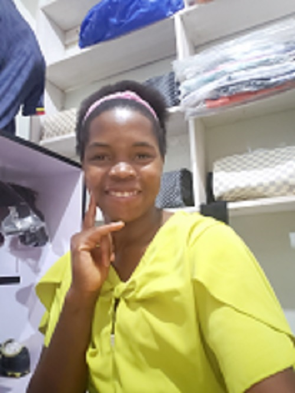

Namazzi Allen Joan | WDD 130

Hello! I am Namazzi Allen Joan from Uganda.My interests are playing football,reading books,playing chess,touring. ho I love my family so much because they have been there for me in every challenging situation. I am studying software and I want to acquire knowledge and develop the skills needed to build websites of my own.And increase on the technology.